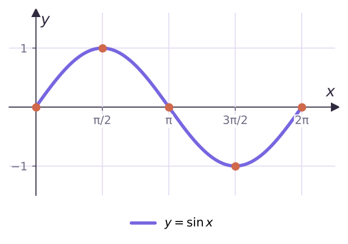
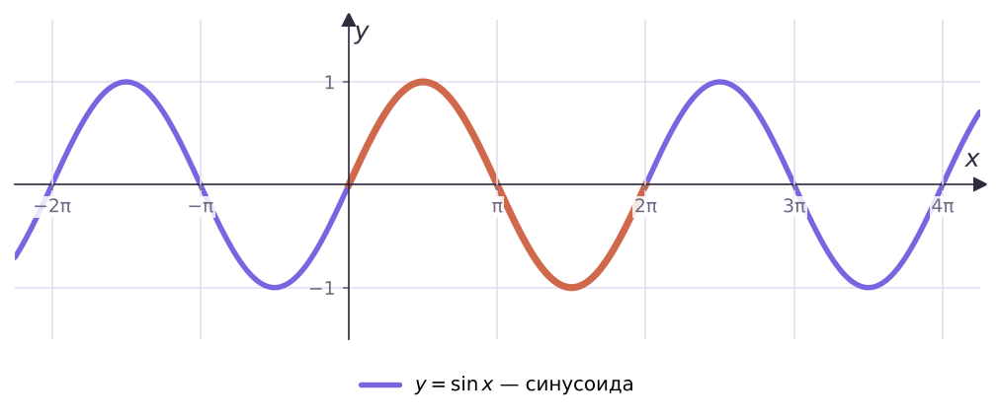
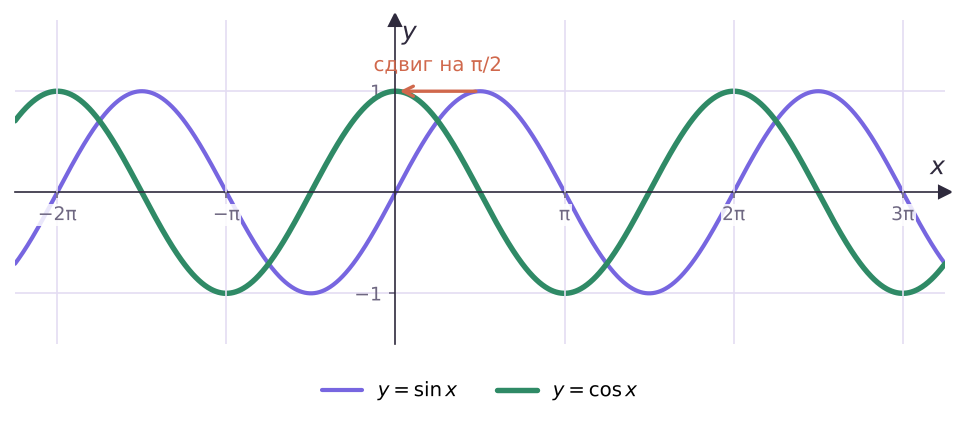

Синусоида и косинусоида

Нули πn, максимум 1 при π/2 + 2πn, минимум −1 при −π/2 + 2πn.

Та же фигура, сдвинутая на π/2 влево. Нули π/2 + πn, максимум при 2πn.

| sin x | cos x | |
|---|---|---|
| E(y) | [−1; 1] | [−1; 1] |
| период | 2π | 2π |
| нули | πn | π/2 + πn |
| чётность | нечётная | чётная |
| ↑ | [−π/2 + 2πn; π/2 + 2πn] | [π + 2πn; 2π + 2πn] |
| ↓ | [π/2 + 2πn; 3π/2 + 2πn] | [2πn; π + 2πn] |